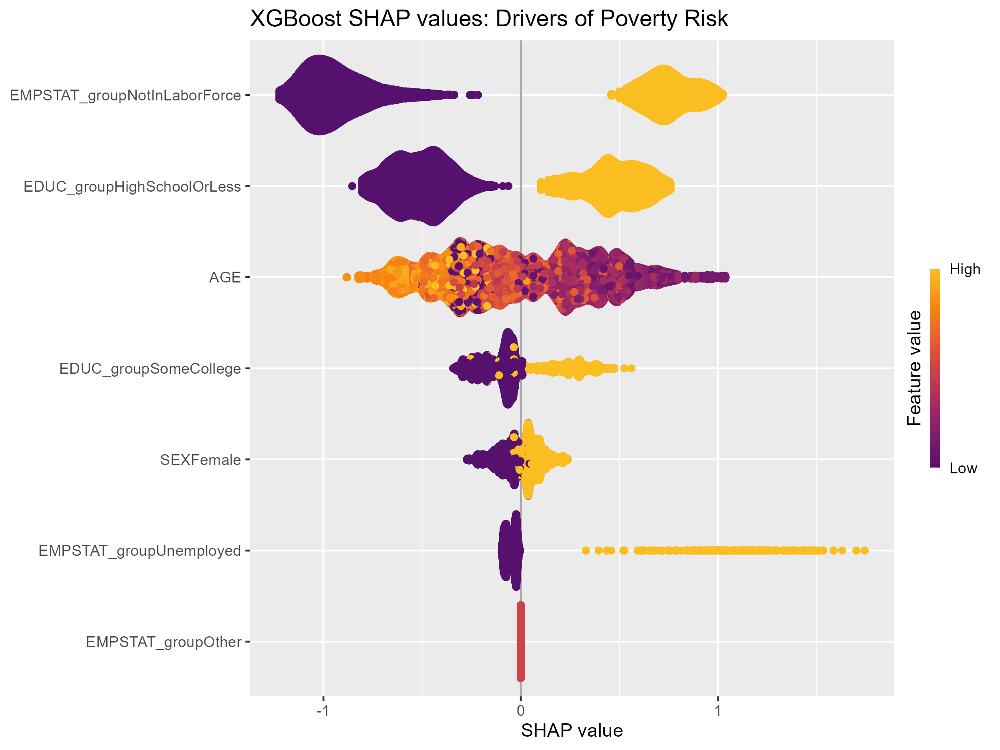

Blog10: Can Machine Learning Predict Poverty?
Introduction
Poverty is a persistent feature of the U.S. labor market, affecting roughly 11% of adults in any given year. While economists have long studied the structural drivers of poverty—such as education and employment status—less attention has been paid to whether we can predict who is at risk at the individual level. Accurate prediction is practically useful: it allows social safety net programs to proactively target resources to those who need them most.
This analysis uses microdata from the IPUMS Current Population Survey (CPS) to build a complete machine learning workflow. I compare a simple logistic regression benchmark against Random Forest and XGBoost to predict whether an adult falls below the official poverty line.
The headline result: Machine learning offers a modest but meaningful improvement over the baseline, and its true value lies in targeting. By identifying the top 20% highest-risk individuals, the model locates a subgroup where the poverty rate is 25.4%—more than double the national average of 10.4%.
How I Measured It
I used the 2024 ASEC of the CPS, which collects income data for the 2023 calendar year. (Note: The official 2023 poverty rate was 11.1%; our sample rate of 10.4% reflects the restriction to working-age adults and the exclusion of missing values).
To prevent target leakage, I strictly excluded all current income variables (including INCWAGE). The poverty threshold is mechanically defined by family total income; using individual wage income to predict poverty would be tautological. The predictors therefore rely only on demographic and labor market characteristics known beforehand or concurrently: - Age (AGE) - Sex (SEX) - Education, binned into three groups: high school or less, some college, and bachelor’s plus. - Employment status, binned into three groups: employed, unemployed, and not in the labor force.
The data is split 80/20 into training and test sets. Because the poverty rate is only 10.4%, accuracy is a misleading metric (a naive model predicting “no poverty” for everyone would be 89.6% accurate). Instead, I evaluate models using ROC-AUC and a targeted policy metric: the actual poverty rate within the 20% of individuals assigned the highest predicted risk. Hyperparameters for the tree models are tuned via cross-validation on the training set.
Finding 1: ML Improves Targeting Capability
| Model | AUC | Top 20% Poverty Rate | Overall Poverty Rate |
|---|---|---|---|
| Logistic (Baseline) | 0.740 | 23.7% | 10.4% |
| Random Forest | 0.755 | 23.7% | 10.4% |
| XGBoost | 0.765 | 25.4% | 10.4% |
The logistic regression baseline performs surprisingly well (AUC 0.740), indicating that the relationship between these coarse demographic variables and poverty risk is largely additive and linear. XGBoost outperforms it (AUC 0.765) by capturing non-linearities and interactions.
However, the most practically meaningful improvement is in targeting. While the overall poverty rate is 10.4%, the 20% of individuals with the highest predicted risk from XGBoost have an actual poverty rate of 25.4%. For a policymaker, this means ML can sharply focus limited resources on the most vulnerable groups instead of random selection.
Finding 2: Labor Force Detachment is the Biggest Risk

To understand what the XGBoost model learned, I compute SHAP (SHapley Additive exPlanations) values on the test set. The beeswarm plot decomposes each individual’s prediction, showing how features push the predicted probability up or down.
The plot reveals that labor force status is the most powerful driver. Being “Not in the Labor Force” consistently pushes predicted risk to the right. Education is the second key factor: having a high school education or less increases risk, whereas some college strongly protects against it. Age displays a non-linear relationship—younger individuals have higher risk, which declines as they approach prime working age.
Interestingly, while “Unemployed” produces massive positive SHAP values when it occurs, its impact is concentrated in a small subset of the sample. “Not in the Labor Force,” by contrast, has a much broader positive SHAP distribution. This highlights a distinct form of vulnerability: structural detachment from the labor force is more widespread among the poor than temporary unemployment.
Conclusion and Takeaway
If I had to choose a model for a policy application, I would choose XGBoost. While the AUC gain over the logistic baseline is modest (0.765 vs. 0.740), the model’s ability to concentrate 25.4% of high-risk individuals into a 20% targeting pool is a practically meaningful improvement. Machine learning does not replace economic intuition—it sharpens it by allowing us to rank individuals and quantify non-linear interactions.
Limitations
- Observational, not causal. The model identifies predictive correlations, not the causal effect of education or employment on poverty.
- Unweighted estimates. The analysis does not apply CPS survey weights (
ASECWT). While the sample poverty rate (10.4%) is close to the official rate for the reference year (11.1%), unweighted targeting estimates may not perfectly represent the national population, which could affect external validity in real-world deployment. - Limited features. The model relies on a small set of demographic and labor force variables. Adding geographic, health, or household structure data could improve predictive power.
- Threshold-based evaluation. While Top-20% targeting reflects a realistic policy constraint, the optimal percentage might vary depending on the actual budget of the welfare program.
Data source: IPUMS CPS, 2024 Annual Social and Economic Supplement (reference year 2023). Full code and data are available in the project repository.